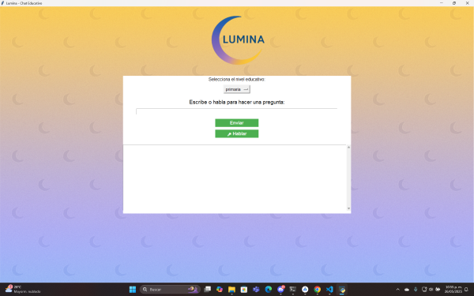
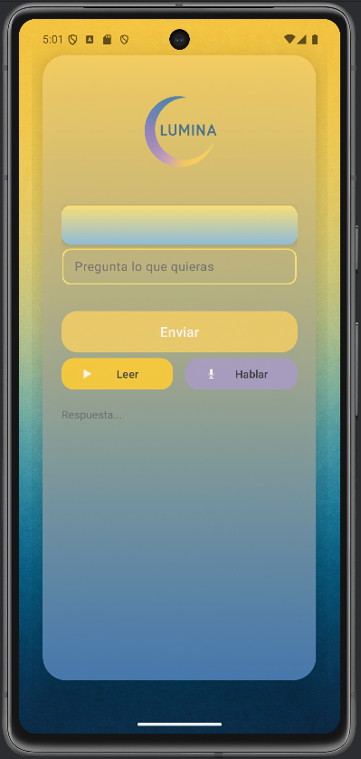

Lumina
Descripción
Lumina es un modelo de inteligencia artificial orientado al apoyo educativo para estudiantes de primaria, secundaria, preparatoria y universidad. El sistema está diseñado para funcionar sin conexión a Internet, facilitando el acceso a información educativa en zonas rurales y contribuyendo a reducir la brecha digital.
Reconocimiento
Segundo lugar en la etapa local del concurso INOVATEC 2025, modalidad Proyecto.
Tecnologías utilizadas
- Python (Backend / Lógica principal)
- Ollama (Modelo LLM local)
- tkinter (Interfaz de escritorio)
- SpeechRecognition (Reconocimiento de voz)
- pyttsx3 (Síntesis de voz)
- PIL (Manipulación de imágenes)
Fragmento del código
import os
import subprocess
import threading
import tkinter as tk
from tkinter import scrolledtext
from PIL import Image, ImageTk
import ollama
import pyttsx3
import speech_recognition as sr
import re
Versión Escritorio

Interfaz desarrollada en Python con Tkinter.
Versión Android

Versión móvil diseñada para funcionar sin conexión, ideal para zonas rurales.